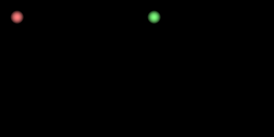

Example demonstrating two viewports in one window, and how one can propagate events to the viewports. Note that stuff like this will be part of the future higher lever visuals layer.
import numpy as np
from vispy import app, gloo
from vispy.gloo import gl
from vispy.util.event import EmitterGroup
VERT_SHADER = """
attribute vec3 a_position;
uniform float u_size;
uniform vec4 u_color;
varying vec4 v_color;
void main (void) {
gl_Position = vec4(a_position, 1.0);
v_color = u_color;
gl_PointSize = u_size;
}
"""
FRAG_SHADER = """
varying vec4 v_color;
void main()
{
float x = 2.0*gl_PointCoord.x - 1.0;
float y = 2.0*gl_PointCoord.y - 1.0;
float a = 1.0 - (x*x + y*y);
gl_FragColor = vec4(v_color.rgb, a*v_color.a);
}
"""
class ViewPort(object):
""" Represents a rectangular region on the screen.
Resize and mouse events are propagated to here, as well
as the draw event.
"""
def __init__(self, bgcolor):
self._bgcolor = bgcolor
self.events = EmitterGroup(source=self,
resize=app.canvas.ResizeEvent,
mouse_press=app.canvas.MouseEvent,
mouse_release=app.canvas.MouseEvent,
mouse_move=app.canvas.MouseEvent,
mouse_wheel=app.canvas.MouseEvent,
)
# Create program
self.program = gloo.Program(VERT_SHADER, FRAG_SHADER)
self.program['u_size'] = 20.0
self.program['u_color'] = bgcolor
# Create position
self.vbo = gloo.VertexBuffer(('', 'float32', 3))
self.program['a_position'] = self.vbo
# Init
self._pos = 25, 25
self._size = 1, 1
def on_mouse_move(self, event):
self._pos = event.pos
def on_mouse_press(self, event):
self.program['u_size'] = 30.0
def on_mouse_release(self, event):
self.program['u_size'] = 20.0
def on_resize(self, event):
self._size = event.size
def on_draw(self):
x = 2.0 * self._pos[0] / self._size[0] - 1.0
y = 2.0 * self._pos[1] / self._size[1] - 1.0
data = np.array([[x, -y, 0]], np.float32)
self.vbo.set_data(data)
self.program.draw(gl.GL_POINTS)
class Canvas(app.Canvas):
def __init__(self):
app.Canvas.__init__(self, close_keys='escape')
self.size = 400, 200
self.left = ViewPort((1.0, 0.5, 0.5, 1.0))
self.right = ViewPort((0.5, 1.0, 0.5, 1.0))
def on_initialize(self, event):
gl.glClearColor(0, 0, 0, 1)
gl.glEnable(gl.GL_BLEND)
gl.glBlendFunc(gl.GL_SRC_ALPHA, gl.GL_ONE)
def on_draw(self, event):
# Draw events are "manually" propagated to the viewport instances,
# because we first want to set the glViewport for each one.
# Prepare
gl.glClear(gl.GL_COLOR_BUFFER_BIT)
w1 = self.size[0] // 2
w2 = self.size[0] - w1
# Left
gl.glViewport(0, 0, w1, self.size[1])
self.left.on_draw()
# Right
gl.glViewport(w1, 0, w2, self.size[1])
self.right.on_draw()
# Invoke new draw
self.update()
def on_resize(self, event):
w1 = event.size[0] // 2
w2 = event.size[0] - w1
h = event.size[1]
self.left.events.resize(size=(w1, h))
self.right.events.resize(size=(w2, h))
def on_mouse_press(self, event):
viewport, pos = self._get_viewport(event.pos)
self._re_emit_mouse_event(viewport.events.mouse_press, pos, event)
def on_mouse_release(self, event):
viewport, pos = self._get_viewport(event.pos)
self._re_emit_mouse_event(viewport.events.mouse_release, pos, event)
def on_mouse_move(self, event):
viewport, pos = self._get_viewport(event.pos)
self._re_emit_mouse_event(viewport.events.mouse_move, pos, event)
def on_mouse_wheel(self, event):
viewport, pos = self._get_viewport(event.pos)
self._re_emit_mouse_event(viewport.events.mouse_wheel, pos, event)
def _get_viewport(self, pos):
""" Based on a given position, get the viewport and the pos
relative to that viewport.
"""
halfwidth = self.size[0] // 2
if pos[0] < halfwidth:
viewport = self.left
pos = pos
else:
viewport = self.right
pos = pos[0] - halfwidth, pos[1]
return viewport, pos
def _re_emit_mouse_event(self, emitter, pos, event):
emitter(pos=pos, button=event.button, modifiers=event.modifiers,
delta=event.delta)
if __name__ == '__main__':
canvas = Canvas()
canvas.show()
app.run()